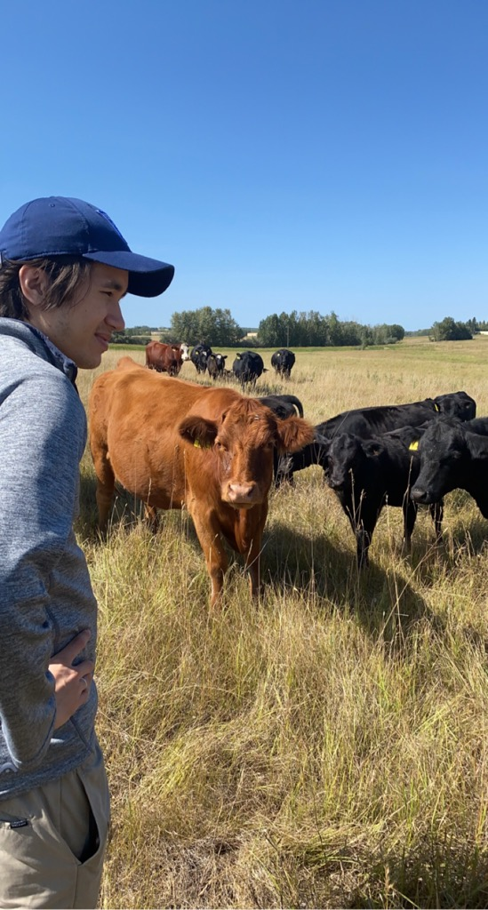
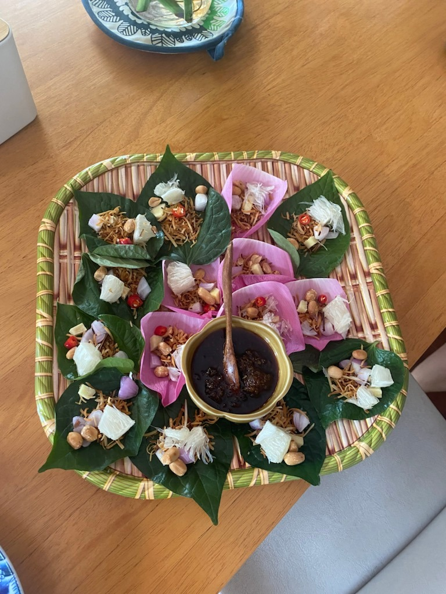

Jacob Hazen
A brief self-introduction: I like machine learning, data science and
programming—this is because I go insane if my mind is not
occupied.
I am a Economics Ph.D. candidate at McGill University. My research
interest involves the overlap of Economics, Data Science, and
Computer Science—specifically Natural Language Processing and its
applications to Macroeconomics.
Apart from being a student, I enjoy most of my time being outdoors
and off my computer. In the winter, I am an frequent hockey
player, casual snowboarder, and runner. During the warmer months, I
am a frequent skateboarder.
Photo Gallery

